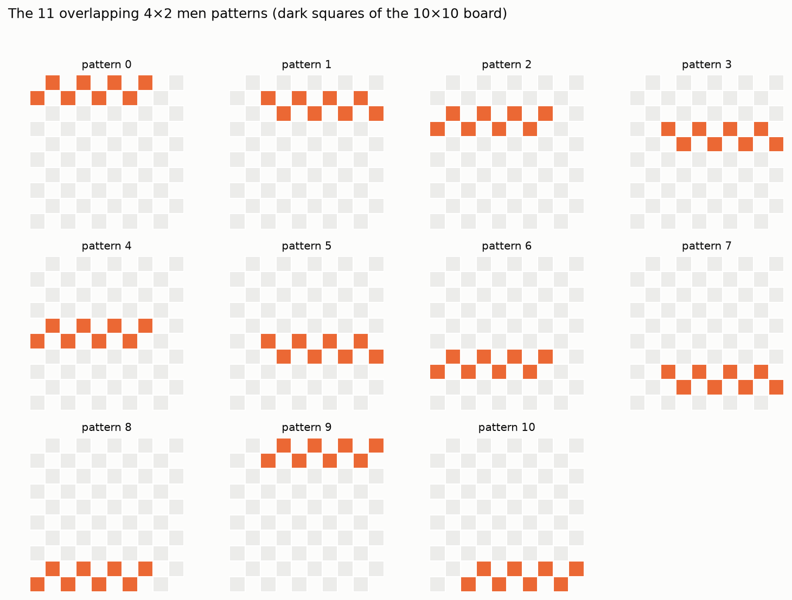
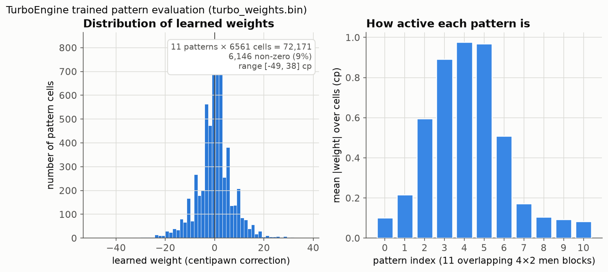
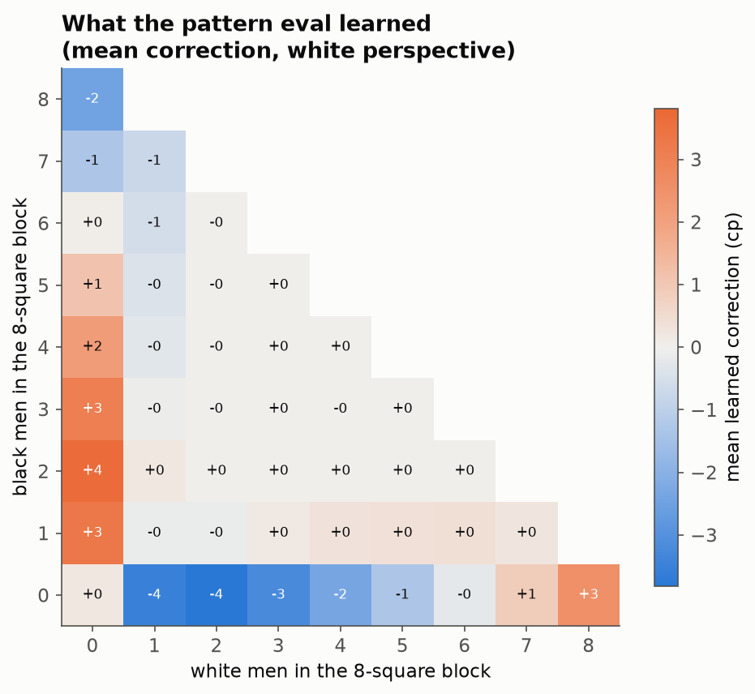
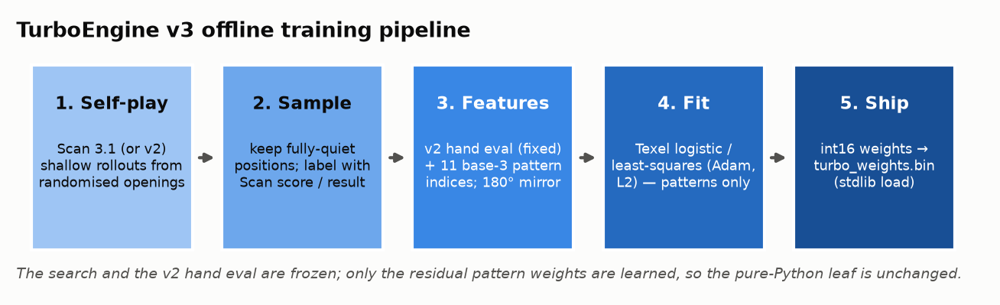
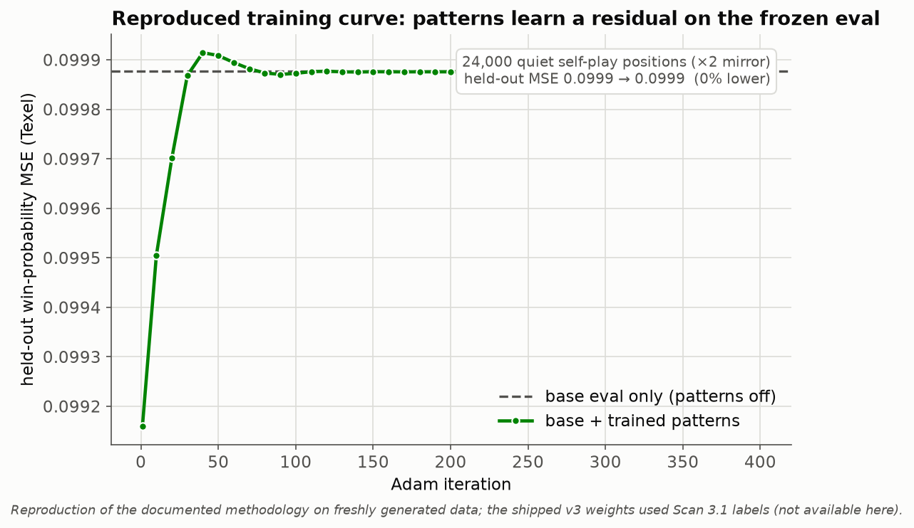
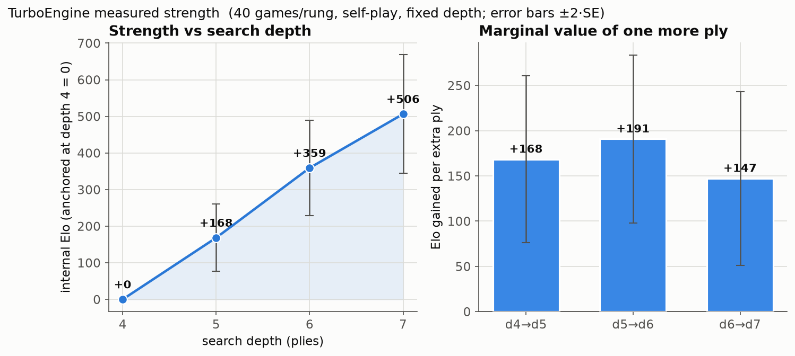
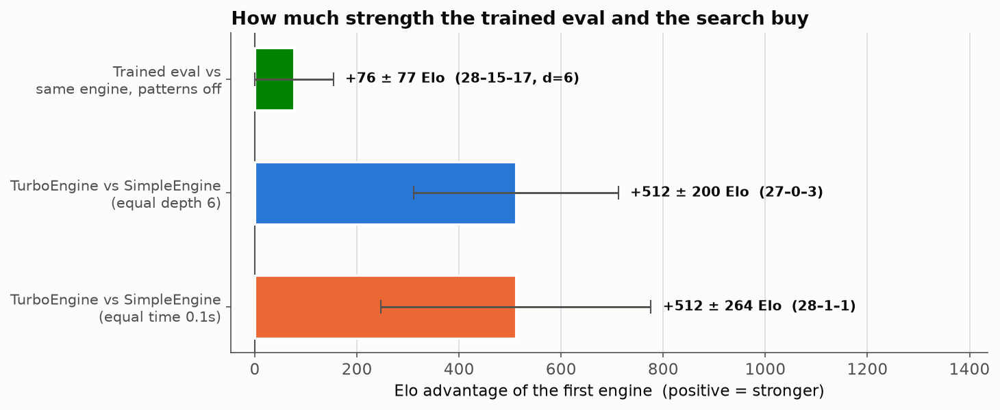
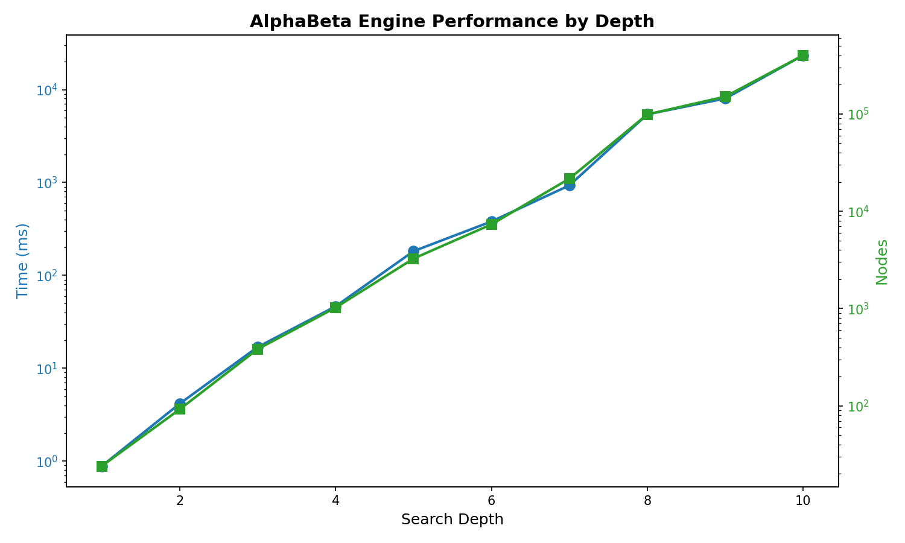

Engine¶
Two engines are built in: TurboEngine — the strongest, for
international 10x10 — and SimpleEngine, a lightweight
general-purpose engine that works on every variant.
Quick Start¶
from draughts import Board, TurboEngine
board = Board()
engine = TurboEngine(time_limit=0.5) # strongest; international 10x10 only
# Get best move
best_move = engine.get_best_move(board)
board.push(best_move)
# Get move with evaluation score
move, score = engine.get_best_move(board, with_evaluation=True)
Engine Interface¶
- class draughts.Engine(depth_limit=6, time_limit=None, name=None)[source]¶
Abstract base class for draughts engines.
Implement this interface to create custom engines compatible with the
Serverfor interactive play and testing.- name¶
Engine name (defaults to class name).
Example
>>> from draughts import Engine >>> import random >>> >>> class RandomEngine(Engine): ... def get_best_move(self, board, with_evaluation=False): ... move = random.choice(list(board.legal_moves)) ... return (move, 0.0) if with_evaluation else move
- abstractmethod get_best_move(board, with_evaluation=False)[source]¶
Find the best move for the current position.
- Parameters:
board (BaseBoard) – The current board state.
with_evaluation (bool) – If True, return
(move, score)tuple.
- Returns:
Best
Move, or(Move, float)ifwith_evaluation=True. Positive scores favor the current player.- Return type:
Example
>>> move = engine.get_best_move(board) >>> move, score = engine.get_best_move(board, with_evaluation=True)
TurboEngine¶
The strongest built-in engine, for the standard international (10x10) board
only. It uses Scan’s 63-bit bitboard layout, a PVS search with transposition
table, and a machine-learned pattern evaluation trained on Scan self-play.
At equal search depth it beats SimpleEngine decisively while
spending less wall-clock time per move — its bitboard leaf searches several
times more nodes per second.
from draughts import Board, TurboEngine
board = Board()
engine = TurboEngine(time_limit=0.5) # or depth_limit=...
move, score = engine.get_best_move(board, with_evaluation=True)
- class draughts.TurboEngine(depth_limit=12, time_limit=None, name=None)[source]¶
Fast alpha-beta engine for international draughts (10x10 only).
- Parameters:
Example
>>> from draughts import Board >>> from draughts.engines.turbo import TurboEngine >>> engine = TurboEngine(time_limit=0.5) >>> move = engine.get_best_move(Board())
- get_best_move(board, with_evaluation=False)[source]¶
Find the best move for the current position.
- Parameters:
board (BaseBoard) – The current board state.
with_evaluation (bool) – If True, return
(move, score)tuple.
- Returns:
Best
Move, or(Move, float)ifwith_evaluation=True. Positive scores favor the current player.- Return type:
Example
>>> move = engine.get_best_move(board) >>> move, score = engine.get_best_move(board, with_evaluation=True)
How it works¶
TurboEngine follows the architecture of top international-draughts engines (Scan, Kingsrow) adapted to a pure-Python leaf — no C extension, no numpy in the hot path.
Board representation. The 50 playing squares are packed into a 63-bit
integer with 13 unused “ghost” bits (Scan’s layout) so that all four diagonal
steps become uniform shifts of 6 and 7. Move generation is whole-board integer
arithmetic — no per-square tables — and search is copy-make on four plain
int bitboards (white men / white kings / black men / black kings) with no
board object and no move stack. Correctness is pinned by perft against the
BikDam reference counts and cross-validated move-for-move against Scan 3.1 (see
the test suite).
Search. Principal-variation search with iterative deepening, aspiration windows, a transposition table, late-move reductions, a single-reply extension, and Scan-style forward pruning (a shallow verification search at a raised beta, the draughts substitute for null-move pruning). Move ordering is TT-move-first then an exponential-moving-average history heuristic. A quiescence stage resolves every forced capture chain before a position is evaluated, with a one-ply threat extension at the horizon so hanging pieces are never missed.
Evaluation. The static eval is computed straight from the bitboards. A frozen “v2” hand eval supplies material and piece-square values (folded into nine 128-entry chunk tables per bitboard for an O(9) lookup), cheap man mobility, and a left/right balance term. On top of that sits the trained pattern correction described next.
The machine-learned pattern evaluation¶
The decisive structural lever in Scan/Kingsrow is a set of overlapping local men patterns whose values are learned from games rather than hand-tuned. TurboEngine ships eleven overlapping 4×2 blocks of board squares:
{kind=link}

Each block’s eight squares are encoded as base-3 digits (0 = empty, 1 = white
man, 2 = black man), giving a 3**8 = 6561-entry weight table per pattern.
Kings stay scalar (they are rare). At a leaf the trit index for each pattern is
extracted with two shifts, two masks and two table lookups — no per-square loop
— so the learned term costs eleven table reads. The weights are stored as
int16 in draughts/engines/turbo_weights.bin; if that file is absent the
pattern term is simply zero and the eval degrades gracefully to the v2 hand
eval.
{kind=link}

The learned weights are a small residual correction (roughly ±10–50 cp per cell, a fraction of a man) layered on the material-dominated base eval. The central patterns (which cover the squares that decide most middlegames) carry the most weight. Averaging every cell by the local men balance shows the eval learned sensible structure — it trims lopsided one-colour clusters that the raw material term over-values and rewards holding pieces against a local enemy majority:
{kind=link}

How it was trained¶
Only the pattern weights are learned; the search and the v2 hand eval are
frozen, so the pure-Python leaf is unchanged. The offline pipeline
(tools/train_pattern_eval.py) is:
{kind=link}

Self-play. Short rollouts from randomised openings — either Scan 3.1 at a fixed move time, or the frozen v2 engine at shallow depth — to produce a diverse position stream.
Sample. Keep only fully quiet positions (neither side has a capture), each labelled with the game’s result and/or Scan’s own search score from white’s perspective.
Features. For every position: the fixed v2 hand eval as a constant offset, plus the eleven base-3 pattern indices. Every sample is also added 180°-rotated with colours swapped, which removes side bias and doubles the signal.
Fit. A Texel-style logistic model
p(white win) = sigmoid(K · E_white)(or a least-squares regression toward Scan’s score) is fit by full-batch Adam with L2 regularisation. The v2 eval is a fixed term; only the pattern residual and the scaleKare trained.Ship. The weights are rounded to
int16and written toturbo_weights.bin, which the engine loads with the standard library alone.
Fitting the residual against strong labels is how the shipped weights were produced. The curve below is a fresh reproduction of the methodology on self-play data generated on the spot — a mechanism check, not a game-strength claim. Here only self-play game-result labels are available (the shipped v3 weights were trained on Scan 3.1 score labels, which this environment cannot reproduce); with those noisy binary labels the pattern residual converges essentially back to the base-only baseline, so the held-out loss ends level with “patterns off”. The durable loss reduction that produced the shipped weights needed the stronger Scan labels:
{kind=link}

Reproduce it. The trainer is self-contained; point it at a Scan binary for the strongest labels, or let it self-play:
# regenerate the shipped-style weights (needs a Scan engine for labels)
python tools/train_pattern_eval.py --label scan --target scanreg \
--games 6000 --workers 10 --out draughts/engines/turbo_weights.bin
Load your own weights (or disable the trained term) at runtime via the
TURBO_WEIGHTS environment variable:
TURBO_WEIGHTS=/path/to/my_weights.bin # custom trained weights
TURBO_WEIGHTS=none # disable → v2 hand eval only
Measured strength¶
Strength was measured with tools/measure_turbo_elo.py and rendered by
tools/generate_turbo_charts.py. Headline figures use a fixed search
depth: wall-clock Elo is noisy and machine-dependent on a shared CPU, whereas
depth-limited games reproduce on any machine. Every game starts from a
distinct, material-balanced random opening, so the games are statistically
independent and the standard errors are honest — cycling a small fixed opening
book against a deterministic engine produces correlated, near-duplicate games
and understates the error. Each number is an Elo estimate with a ±2·SE
interval (win = 1, draw = ½, loss = 0). The internal ladder is a relative
scale anchored at the shallowest depth; with no externally calibrated opponent
(e.g. Scan) wired in, an absolute FMJD rating is not claimed.
{kind=link}

{kind=link}

The flagship gap. At equal search depth TurboEngine beats the
general-purpose SimpleEngine decisively (27–0–3, +512 ± 200
Elo at depth 6) while spending less wall-clock time per move (≈240 ms vs
≈280 ms) — and it does so while searching several times more nodes (≈18k vs ≈6k
per move), so its bitboard leaf is much faster per node. It is stronger and
faster. Each extra ply of search is worth roughly 150–190 Elo over the range
measured (d4→d5 +168, d5→d6 +191, d6→d7 +147), so the engine scales cleanly with
thinking time.
The training payoff — and its ceiling. The shipped pattern weights are a
residual on the frozen hand eval, and the honest game-Elo effect is small.
Switching the trained term off (TURBO_WEIGHTS=none) changes how the engine
plays — most ablation games are decisive, not draws (28–15–17 over 60 games) —
yet at fixed depth the two versions are only about +75 Elo apart (the
leftmost bar above), a margin whose ±2·SE interval still reaches down to zero:
the effect is close to the measurement’s noise floor. That matches the project’s own
v4 eval-tuning investigation, which concluded the v3
pattern eval already sits near the ceiling of what a
pattern-evaluation-trained-on-Scan-labels can extract: the learned residual
reshapes play more than it moves the scoreboard at these depths, and the
remaining headroom is in search, not more pattern capacity. (Reproducing the
raw eval-accuracy gain would need an externally calibrated oracle such as the
Scan engine for labels, which is not wired into this environment.)
Reproduce it:
# measure everything (depth ladder, flagship gap, training ablation)
python tools/measure_turbo_elo.py --all --workers 3 \
--out docs/source/_static/turbo_elo.json
# rebuild every figure on this page (Elo charts, weights, training curve);
# --with-curve does a few minutes of self-play
python tools/generate_turbo_charts.py --with-curve
SimpleEngine¶
A lightweight general-purpose engine — alpha-beta search with a transposition
table and iterative deepening — that works on every board variant, unlike
TurboEngine (international only). Use it for American,
Frisian, Russian, Brazilian, and the other variants.
from draughts import Board, SimpleEngine
board = Board()
engine = SimpleEngine(depth_limit=5)
move, score = engine.get_best_move(board, with_evaluation=True)
- class draughts.SimpleEngine(depth_limit=6, time_limit=None, name=None)[source]¶
AI engine using Negamax search with alpha-beta pruning.
This engine implements a strong draughts AI with several optimizations for efficient tree search. Works with any board variant (Standard, American, etc.).
Algorithm:
Negamax: Simplified minimax using
max(a,b) = -min(-a,-b)Iterative Deepening: Progressively deeper searches for time control
Transposition Table: Zobrist hashing to cache evaluated positions
Quiescence Search: Extends captures to avoid horizon effects
Move Ordering: PV moves, captures, killers, history heuristic
PVS/LMR: Principal Variation Search with Late Move Reductions
Evaluation:
Material balance (men=1.0, kings=2.5)
Piece-Square Tables rewarding advancement and center control
- nodes¶
Number of nodes searched in last call.
Example
>>> from draughts import Board, SimpleEngine >>> board = Board() >>> engine = SimpleEngine(depth_limit=5) >>> move = engine.get_best_move(board) >>> board.push(move)
- Example with American Draughts:
>>> from draughts.boards.american import Board >>> board = Board() >>> engine = SimpleEngine(depth_limit=6) >>> move = engine.get_best_move(board)
- Example with evaluation:
>>> move, score = engine.get_best_move(board, with_evaluation=True) >>> print(f"Best: {move}, Score: {score:.2f}")
- __init__(depth_limit=6, time_limit=None, name=None)[source]¶
Initialize the engine.
- Parameters:
depth_limit (int) – Maximum search depth. Higher = stronger but slower. Recommended: 5-6 for play, 7-8 for analysis.
time_limit (float | None) – Optional time limit in seconds. If set, search uses iterative deepening and stops when time expires.
name (str | None) – Custom engine name. Defaults to class name.
Example
>>> engine = SimpleEngine(depth_limit=6) >>> engine = SimpleEngine(depth_limit=20, time_limit=1.0)
- evaluate(board)[source]¶
Evaluate the board position.
Uses material count and piece-square tables. Works with any board variant.
- Parameters:
board (BaseBoard) – The board to evaluate.
- Returns:
Score from the perspective of the side to move. Positive = good for current player.
- Return type:
- get_best_move(board, with_evaluation=False)[source]¶
Find the best move for the current position.
- Parameters:
board (BaseBoard) – The board to analyze.
with_evaluation (bool) – If True, return
(move, score)tuple.
- Returns:
Best
Move, or(Move, float)ifwith_evaluation=True.- Raises:
ValueError – If no legal moves are available.
- Return type:
Example
>>> move = engine.get_best_move(board) >>> move, score = engine.get_best_move(board, with_evaluation=True)
Performance¶
SimpleEngine search cost by depth:
Depth |
Avg Time |
Avg Nodes |
|---|---|---|
5 |
274 ms |
3,263 |
6 |
619 ms |
7,330 |
7 |
2.20 s |
21,642 |
8 |
6.55 s |
98,987 |
Depth 5-6: Strong play, responsive (< 1s per move)
Depth 7-8: Very strong, suitable for analysis
{kind=link}

HubEngine¶
Use external engines implementing the Hub protocol (e.g., Scan).
- class draughts.HubEngine(path, time_limit=1.0, depth_limit=None, init_timeout=10.0)[source]¶
Engine wrapper for Hub protocol (used by Scan and similar engines).
This class manages subprocess communication with an external draughts engine using the Hub protocol (version 2).
- Parameters:
- path¶
Path to the engine executable
Example
>>> engine = HubEngine("scan.exe", time_limit=1.0) >>> engine.start() >>> move = engine.get_best_move(board) >>> engine.quit()
# Or with context manager: >>> with HubEngine(“scan.exe”) as engine: … move = engine.get_best_move(board)
- __init__(path, time_limit=1.0, depth_limit=None, init_timeout=10.0)[source]¶
Initialize Hub engine wrapper.
- start()[source]¶
Start the engine subprocess and complete initialization handshake.
The Hub protocol initialization: 1. GUI sends “hub” 2. Engine responds with id, param declarations, then “wait” 3. GUI optionally sends set-param commands 4. GUI sends “init” 5. Engine responds with “ready”
- Raises:
FileNotFoundError – If engine executable not found
TimeoutError – If engine doesn’t respond in time
RuntimeError – If initialization fails
- Return type:
None
- get_best_move(board, with_evaluation=False)[source]¶
Get the best move for the given board position.
Implements the Engine interface. Sends the position to the engine, starts a search, and returns the best move.
- Parameters:
board (BaseBoard) – The current board state
with_evaluation (bool) – If True, return (move, score) tuple
- Returns:
Move object, or (Move, score) if with_evaluation=True
- Raises:
RuntimeError – If engine not started or search fails
ValueError – If board variant not supported
- Return type:
Example:
from draughts import Board, HubEngine
with HubEngine("path/to/scan.exe", time_limit=1.0) as engine:
board = Board()
move, score = engine.get_best_move(board, with_evaluation=True)
Custom Engine¶
Inherit from Engine to create your own:
from draughts import Engine
import random
class RandomEngine(Engine):
def get_best_move(self, board, with_evaluation=False):
move = random.choice(list(board.legal_moves))
return (move, 0.0) if with_evaluation else move
Use with the Server for interactive testing.
Benchmarking¶
Compare two engines against each other with comprehensive statistics.
Quick Start¶
from draughts import Benchmark, SimpleEngine
# Compare two engines
stats = Benchmark(
SimpleEngine(depth_limit=4),
SimpleEngine(depth_limit=6),
games=20
).run()
print(stats)
Output:
============================================================
BENCHMARK: SimpleEngine (d=4) vs SimpleEngine (d=6)
============================================================
RESULTS: 2-12-6 (W-L-D)
SimpleEngine (d=4) win rate: 25.0%
Elo difference: -191
PERFORMANCE
Avg game length: 85.3 moves
SimpleEngine (d=4): 25.2ms/move, 312 nodes/move
SimpleEngine (d=6): 142.5ms/move, 1850 nodes/move
Total time: 45.2s
...
Benchmark Class¶
- class draughts.Benchmark(engine1, engine2, board_class=<class 'draughts.boards.standard.Board'>, games=10, openings=None, swap_colors=True, max_moves=200, workers=1)[source]¶
Benchmark two engines against each other.
Example
>>> from draughts import Benchmark, SimpleEngine >>> bench = Benchmark(SimpleEngine(depth_limit=4), SimpleEngine(depth_limit=6)) >>> print(bench.run())
- Parameters:
- __init__(engine1, engine2, board_class=<class 'draughts.boards.standard.Board'>, games=10, openings=None, swap_colors=True, max_moves=200, workers=1)[source]¶
Parameters¶
engine1, engine2: Any
Engineinstances to compareboard_class: Board variant (
StandardBoard,AmericanBoard, etc.)games: Number of games to play (default: 10)
openings: List of FEN strings for starting positions
swap_colors: Alternate colors between games (default: True)
max_moves: Maximum moves per game (default: 200)
workers: Parallel workers (default: 1, sequential)
Custom Names¶
Engines with the same class name are automatically distinguished by their settings:
# These will show as "SimpleEngine (d=4)" and "SimpleEngine (d=6)"
Benchmark(
SimpleEngine(depth_limit=4),
SimpleEngine(depth_limit=6)
)
Or provide custom names:
Benchmark(
SimpleEngine(depth_limit=4, name="FastBot"),
SimpleEngine(depth_limit=6, name="StrongBot")
)
Custom Openings¶
By default, 10x10 boards use built-in opening positions. Provide your own:
from draughts import Benchmark, SimpleEngine, STANDARD_OPENINGS
# Use specific FEN positions
custom_openings = [
"W:W31,32,33,34,35:B1,2,3,4,5",
"B:W40,41,42:B10,11,12",
]
stats = Benchmark(
SimpleEngine(depth_limit=4),
SimpleEngine(depth_limit=6),
openings=custom_openings
).run()
# Or use the built-in openings
print(f"Available openings: {len(STANDARD_OPENINGS)}")
Different Board Variants¶
Test engines on any supported variant:
from draughts import Benchmark, SimpleEngine
from draughts import AmericanBoard, FrisianBoard, RussianBoard
# American checkers (8x8)
stats = Benchmark(
SimpleEngine(depth_limit=5),
SimpleEngine(depth_limit=7),
board_class=AmericanBoard,
games=10
).run()
Saving Results to CSV¶
Save benchmark results to CSV for tracking over time:
stats = Benchmark(e1, e2, games=20).run()
stats.to_csv("benchmark_results.csv")
If the file exists, results are appended. The CSV includes:
Timestamp, engine names, game count
Wins, losses, draws, win rate, Elo difference
Average moves, time per move, nodes per move
Total benchmark time
Statistics¶
The BenchmarkStats object provides:
games: Total games played
e1_wins, e2_wins, draws: Win/loss/draw counts
e1_win_rate: Engine 1’s win rate (0.0-1.0)
elo_diff: Estimated Elo difference (positive = engine1 stronger)
avg_moves: Average game length
avg_time_e1, avg_time_e2: Average time per move
avg_nodes_e1, avg_nodes_e2: Average nodes searched per move
results: List of individual
GameResultobjects
- class draughts.BenchmarkStats(*, e1_name, e2_name, results=<factory>, total_time=0.0)[source]¶
Aggregated benchmark statistics.
- Parameters:
e1_name (str)
e2_name (str)
results (list[GameResult])
total_time (float)
- model_config = {'arbitrary_types_allowed': True}¶
Configuration for the model, should be a dictionary conforming to [ConfigDict][pydantic.config.ConfigDict].
- to_csv(path='benchmark_results.csv')[source]¶
Save benchmark results to CSV file.
If the file exists, results are appended. Otherwise, a new file is created with headers.
- Parameters:
path (str | Path) – Path to CSV file (default: “benchmark_results.csv”)
- Returns:
Path to the saved CSV file.
- Return type:
Example
>>> stats = Benchmark(e1, e2, games=10).run() >>> stats.to_csv("results.csv")
- class draughts.GameResult(*, game_number, winner=None, moves=0, e1_time=0.0, e2_time=0.0, e1_nodes=0, e2_nodes=0, e1_color=Color.WHITE, opening='', final_fen='', termination='unknown')[source]¶
Result of a single game.
- Parameters:
- model_config = {'arbitrary_types_allowed': True}¶
Configuration for the model, should be a dictionary conforming to [ConfigDict][pydantic.config.ConfigDict].